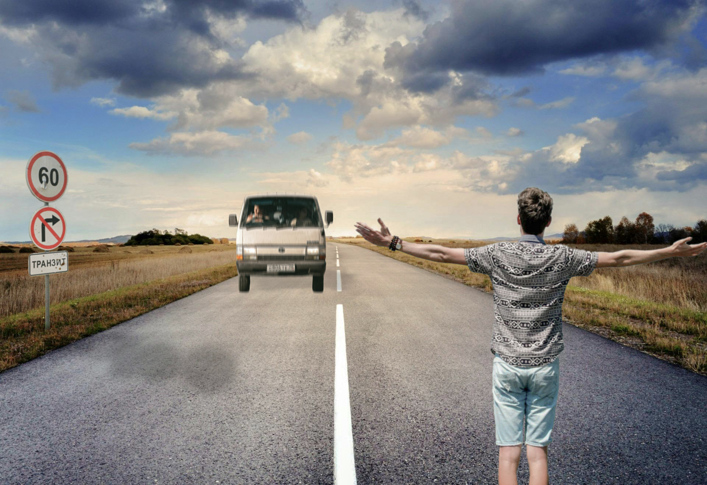
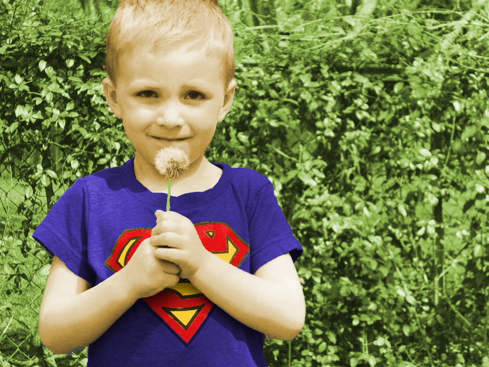

Video koji sam uredila u Adobe Premiereu za jednu od vježbi:
Video prikazuje koncert, naglasak je na fade in i fade out prijelazu te promjenu originalnog audia videa.
Fotografije
Fotografije koje sam obrađivala u Adobe PhotoShopu kao dio vježbi iz piksel grafike:
Zadatak je bila korekcija kože i boja.

Zadatak je bio napraviti fotomontažu pomoću zadanih elemenata i pozadina.

Zadatak je bio obojati crno bijelu fotografiju uz pomoć RGB kanala.
Ilustracija
Jedna od mojih ilustracija koja je rađena kao dio vježbi iz vektorske grafike.
Ilustracija kojom smo vježbali izvlačenje Bezierovih krivulja.